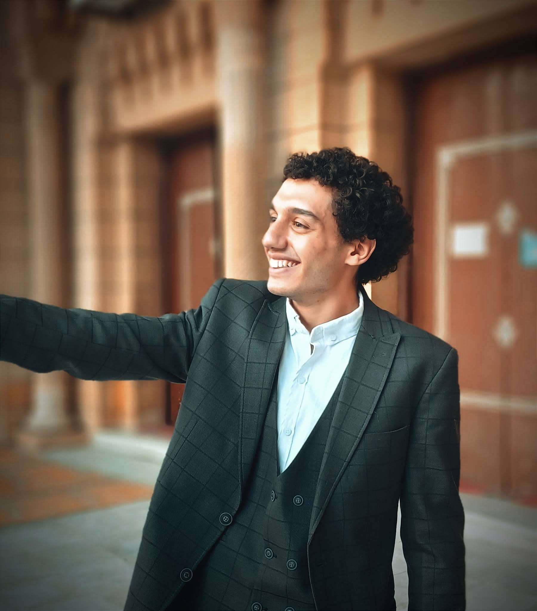
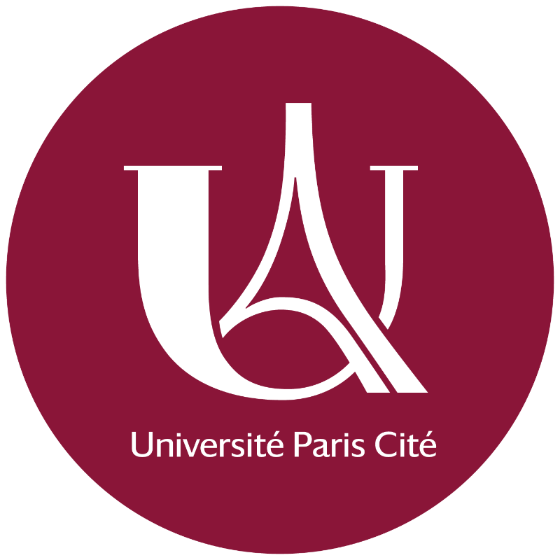
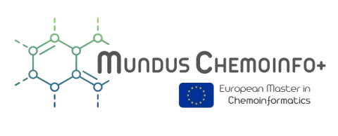
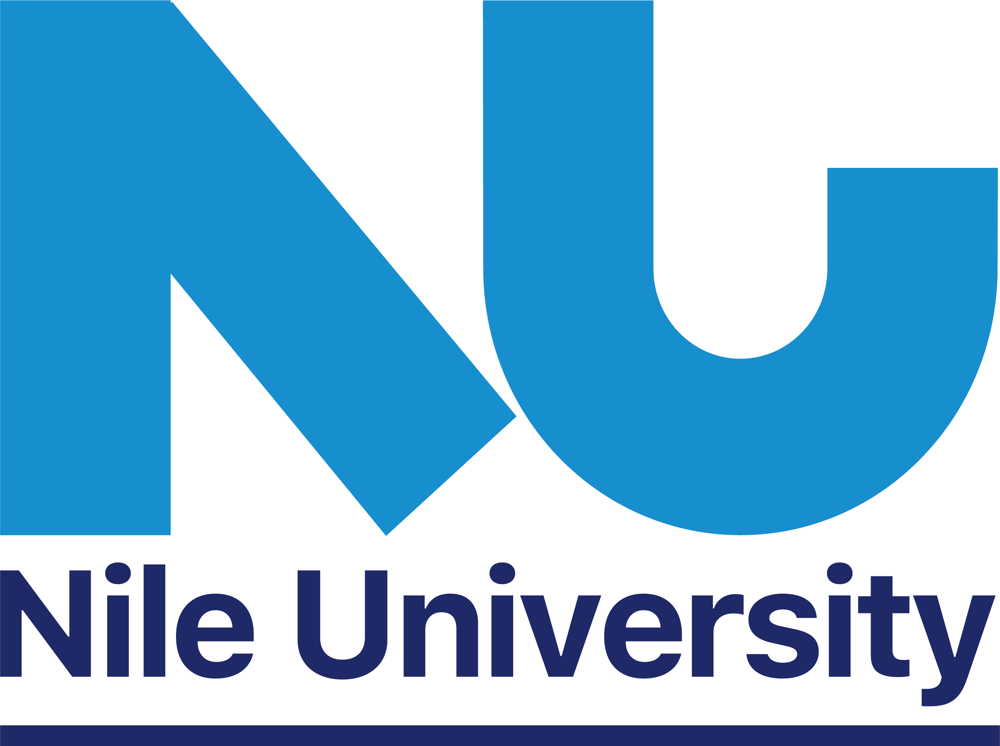

CADD & Data Science
Graduate researcher specializing in QSAR, cheminformatics, and machine learning applications in drug discovery.

EMJM Cheminformatics+ student in the In Silico Drug Design Bioactive Molecules track.
My research interests center on developing computational tools to accelerate drug design, combining cheminformatics with machine learning to predict molecular properties and optimize therapeutic candidates.



A multifunctional nanozyme platform with lower Km values than natural HRP, achieving 98.7% removal efficiency for dinitrophenol with dual functionality in colorimetric sensing and water treatment.
View publication →A systematic analysis of quinoline and quinolone scaffolds in antimicrobial drug design, examining structure-activity relationships and recent developments in combating drug resistance mechanisms.
A modular, installable CLI for structure-based virtual screening: automated protein/ligand preparation, three-tier active-site detection (co-crystallized ligand, fpocket, custom geometric detector), and parallelized Gnina docking with CNN scoring plus ranked CSV/Excel/SDF reporting.
View on GitHub →An ML pipeline predicting compound potency (pIC50) against any ChEMBL target from SMILES. Automated ChEMBL retrieval, RDKit fingerprinting, and Random Forest/XGBoost training with scaffold-based splitting and y-randomization to prevent leakage, plus applicability-domain and Lipinski checks.
View on GitHub →A CLI tool for screening compound libraries via 2D similarity (Tanimoto/Morgan fingerprints), diversity selection (Butina clustering), and Lipinski/Veber filtering, with a rank-sum consensus step merging similarity and docking scores into a final shortlist. Built for the 9th Advanced In Silico Drug Design Workshop.
View on GitHub →A CLI tool identifying differentially expressed genes from expression matrices: fold change / Welch's t-test and Benjamini-Hochberg correction implemented from scratch, plus co-expression analysis and GO enrichment with automated probe-to-gene-symbol mapping. Course project: CIT672, Nile University.
View on GitHub →Training in structure-based and ligand-based drug design, pharmacophore modeling, virtual screening methodologies, and de novo design strategies. Included a competitive drug design challenge.
View challenge code →Training in quantum chemistry, molecular dynamics simulations with GROMACS, and electronic structure calculations. Focused on practical applications in drug discovery and materials science.
Applied molecular modeling and drug design work within the university drug research center.
Training in Python-based cheminformatics workflows using RDKit for molecular manipulation and Gnina for docking — searching BindingDB datasets, fingerprint analysis, and ligand binding to the SARS-CoV-2 main protease via Google Colab.
Foundational course in data science principles and Python-based analysis workflows.
Harvard's foundational programming course, covering Python fundamentals, algorithms, and problem-solving.
Training in complex problem synthesis, strategic thinking frameworks, and digital leadership.
I'm always open to discussing the intersection of molecular discovery and data science.